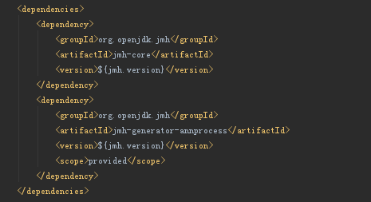

34 有人说“Lambda 能让 Java 程序慢 30 倍”，你怎么看？¶
在上一讲中，我介绍了 Java 性能问题分析的一些基本思路。但在实际工作中，我们不能仅仅等待性能出现问题再去试图解决，而是需要定量的、可对比的方法，去评估 Java 应用性能，来判断其是否能够符合业务支撑目标。今天这一讲，我会介绍从 Java 开发者角度，如何从代码级别判断应用的性能表现，重点理解最广泛使用的基准测试（Benchmark）。
今天我要问你的问题是，有人说“Lambda 能让 Java 程序慢 30 倍”，你怎么看？
为了让你清楚地了解这个背景，请参考下面的代码片段。在实际运行中，基于 Lambda/Stream 的版本（lambdaMaxInteger），比传统的 for-each 版本（forEachLoopMaxInteger）慢很多。
// 一个大的 ArrayList，内部是随机的整形数据
volatile List<Integer> integers = …
// 基准测试 1
public int forEachLoopMaxInteger() {
int max = Integer.MIN_VALUE;
for (Integer n : integers) {
max = Integer.max(max, n);
}
return max;
}
// 基准测试 2
public int lambdaMaxInteger() {
return integers.stream().reduce(Integer.MIN_VALUE, (a, b) -> Integer.max(a, b));
}
典型回答¶
我认为，“Lambda 能让 Java 程序慢 30 倍”这个争论实际反映了几个方面：
第一，基准测试是一个非常有效的通用手段，让我们以直观、量化的方式，判断程序在特定条件下的性能表现。
第二，基准测试必须明确定义自身的范围和目标，否则很有可能产生误导的结果。前面代码片段本身的逻辑就有瑕疵，更多的开销是源于自动装箱、拆箱（auto-boxing/unboxing），而不是源自 Lambda 和 Stream，所以得出的初始结论是没有说服力的。
第三，虽然 Lambda/Stream 为 Java 提供了强大的函数式编程能力，但是也需要正视其局限性：
- 一般来说，我们可以认为 Lambda/Stream 提供了与传统方式接近对等的性能，但是如果对于性能非常敏感，就不能完全忽视它在特定场景的性能差异了，例如： 初始化的开销。 Lambda 并不算是语法糖，而是一种新的工作机制，在首次调用时，JVM 需要为其构建CallSite实例。这意味着，如果 Java 应用启动过程引入了很多 Lambda 语句，会导致启动过程变慢。其实现特点决定了 JVM 对它的优化可能与传统方式存在差异。
- 增加了程序诊断等方面的复杂性，程序栈要复杂很多，Fluent 风格本身也不算是对于调试非常友好的结构，并且在可检查异常的处理方面也存在着局限性等。
考点分析¶
今天的题目是源自于一篇有争议的文章，原文后来更正为“如果 Stream 使用不当，会让你的代码慢 5 倍”。针对这个问题我给出的回答，并没有纠结于所谓的“快”与“慢”，而是从工程实践的角度指出了基准测试本身存在的问题，以及 Lambda 自身的局限性。
从知识点的角度，这个问题考察了我在专栏第 7 讲中介绍过的自动装箱 / 拆箱机制对性能的影响，并且考察了 Java 8 中引入的 Lambda 特性的相关知识。除了这些知识点，面试官还可能更加深入探讨如何用基准测试之类的方法，将含糊的观点变成可验证的结论。
对于 Java 语言的很多特性，经常有很多似是而非的 “秘籍”，我们有必要去伪存真，以定量、定性的方式探究真相，探讨更加易于推广的实践。找到结论的能力，比结论本身更重要，因此在今天这一讲中，我们来探讨一下：
- 基准测试的基础要素，以及如何利用主流框架构建简单的基准测试。
- 进一步分析，针对保证基准测试的有效性，如何避免偏离测试目的，如何保证基准测试的正确性。
知识扩展¶
首先，我们先来整体了解一下基准测试的主要目的和特征，专栏里我就不重复那些书面的定义了。
性能往往是特定情景下的评价，泛泛地说性能“好”或者“快”，往往是具有误导性的。通过引入基准测试，我们可以定义性能对比的明确条件、具体的指标，进而保证得到 定量的、可重复的 对比数据，这是工程中的实际需要。
不同的基准测试其具体内容和范围也存在很大的不同。如果是专业的性能工程师，更加熟悉的可能是类似SPEC提供的工业标准的系统级测试；而对于大多数 Java 开发者，更熟悉的则是范围相对较小、关注点更加细节的微基准测试（Micro-Benchmark）。我在文章开头提的问题，就是典型的微基准测试，也是我今天的侧重点。什么时候需要开发微基准测试呢？
我认为，当需要对一个大型软件的某小部分的性能进行评估时，就可以考虑微基准测试。换句话说，微基准测试大多是 API 级别的验证，或者与其他简单用例场景的对比，例如：
- 你在开发共享类库，为其他模块提供某种服务的 API 等。
- 你的 API 对于性能，如延迟、吞吐量有着严格的要求，例如，实现了定制的 HTTP 客户端 API，需要明确它对 HTTP 服务器进行大量 GET 请求时的吞吐能力，或者需要对比其他 API，保证至少对等甚至更高的性能标准。
所以微基准测试更是偏基础、底层平台开发者的需求，当然，也是那些追求极致性能的前沿工程师的最爱。
如何构建自己的微基准测试，选择什么样的框架比较好？ 目前应用最为广泛的框架之一就是JMH，OpenJDK 自身也大量地使用 JMH 进行性能对比，如果你是做 Java API 级别的性能对比，JMH 往往是你的首选。
JMH 是由 Hotspot JVM 团队专家开发的，除了支持完整的基准测试过程，包括预热、运行、统计和报告等，还支持 Java 和其他 JVM 语言。更重要的是，它针对 Hotspot JVM 提供了各种特性，以保证基准测试的正确性，整体准确性大大优于其他框架，并且，JMH 还提供了用近乎白盒的方式进行 Profiling 等工作的能力。
使用 JMH 也非常简单，你可以直接将其依赖加入 Maven 工程，如下图：
{kind=link}
也可以，利用类似下面的命令，直接生成一个 Maven 项目。
mvn archetype:generate \
-DinteractiveMode=false \
-DarchetypeGroupId=org.openjdk.jmh \
-DarchetypeArtifactId=jmh-java-benchmark-archetype \
-DgroupId=org.sample \
-DartifactId=test \
-Dversion=1.0
JMH 利用注解（Annotation），定义具体的测试方法，以及基准测试的详细配置。例如，至少要加上“@Benchmark”以标识它是个基准测试方法，而 BenchmarkMode 则指定了基准测试模式，例如下面例子指定了吞吐量（Throughput）模式，还可以根据需要指定平均时间（AverageTime）等其他模式。
@Benchmark
@BenchmarkMode(Mode.Throughput)
public void testMethod() {
// Put your benchmark code here.
}
当我们实现了具体的测试后，就可以利用下面的 Maven 命令构建。
运行基准测试则与运行不同的 Java 应用没有明显区别。
更加具体的上手步骤，请参考相关指南。JMH 处处透着浓浓的工程师味道，并没有纠结于完善的文档，而是提供了非常棒的样例代码，所以你需要习惯于直接从代码中学习。如何保证微基准测试的正确性，有哪些坑需要规避？
首先，构建微基准测试，需要从白盒层面理解代码，尤其是具体的性能开销，不管是 CPU 还是内存分配。这有两个方面的考虑，第一，需要保证我们写出的基准测试符合测试目的，确实验证的是我们要覆盖的功能点，这一讲的问题就是个典型例子；第二，通常对于微基准测试，我们通常希望代码片段确实是有限的，例如，执行时间如果需要很多毫秒（ms），甚至是秒级，那么这个有效性就要存疑了，也不便于诊断问题所在。
更加重要的是，由于微基准测试基本上都是体量较小的 API 层面测试，最大的威胁来自于过度“聪明”的 JVM！Brain Goetz 曾经很早就指出了微基准测试中的典型问题。
由于我们执行的是非常有限的代码片段，必须要保证 JVM 优化过程不影响原始测试目的，下面几个方面需要重点关注：
- 保证代码经过了足够并且合适的预热。我在专栏第 1 讲中提到过，默认情况，在 server 模式下，JIT 会在一段代码执行 10000 次后，将其编译为本地代码，client 模式则是 1500 次以后。我们需要排除代码执行初期的噪音，保证真正采样到的统计数据符合其稳定运行状态。 通常建议使用下面的参数来判断预热工作到底是经过了多久。
我这里建议考虑另外加上一个参数，否则 JVM 将默认开启后台编译，也就是在其他线程进行，可能导致输出的信息有些混淆。
与此同时，也要保证预热阶段的代码路径和采集阶段的代码路径是一致的，并且可以观察 PrintCompilation 输出是否在后期运行中仍然有零星的编译语句出现。
- 防止 JVM 进行无效代码消除（Dead Code Elimination），例如下面的代码片段中，由于我们并没有使用计算结果 mul，那么 JVM 就可能直接判断无效代码，根本就不执行它。
如果你发现代码统计数据发生了数量级程度上的提高，需要警惕是否出现了无效代码消除的问题。
解决办法也很直接，尽量保证方法有返回值，而不是 void 方法，或者使用 JMH 提供的BlackHole设施，在方法中添加下面语句。
- 防止发生常量折叠（Constant Folding）。JVM 如果发现计算过程是依赖于常量或者事实上的常量，就可能会直接计算其结果，所以基准测试并不能真实反映代码执行的性能。JMH 提供了 State 机制来解决这个问题，将本地变量修改为 State 对象信息，请参考下面示例。
@State(Scope.Thread)
public static class MyState {
public int left = 10;
public int right = 100;
}
public void testMethod(MyState state, Blackhole blackhole) {
int left = state.left;
int right = state.right;
int mul = left * right;
blackhole.consume(mul);
}
- 另外 JMH 还会对 State 对象进行额外的处理，以尽量消除伪共享（False Sharing）的影响，标记 @State，JMH 会自动进行补齐。
- 如果你希望确定方法内联（Inlining）对性能的影响，可以考虑打开下面的选项。
从上面的总结，可以看出来微基准测试是一个需要高度了解 Java、JVM 底层机制的技术，是个非常好的深入理解程序背后效果的工具，但是也反映了我们需要审慎对待微基准测试，不被可能的假象蒙蔽。
我今天介绍的内容是相对常见并易于把握的，对于微基准测试，GC 等基层机制同样会影响其统计数据。我在前面提到，微基准测试通常希望执行时间和内存分配速率都控制在有限范围内，而在这个过程中发生 GC，很可能导致数据出现偏差，所以 Serial GC 是个值得考虑的选项。另外，JDK 11 引入了Epsilon GC，可以考虑使用这种什么也不做的 GC 方式，从最大可能性去排除相关影响。
今天我从一个争议性的程序开始，探讨了如何从开发者角度而不是性能工程师角度，利用（微）基准测试验证你在性能上的判断，并且介绍了其基础构建方式和需要重点规避的风险点。
一课一练¶
关于今天我们讨论的题目你做到心中有数了吗？我们在项目中需要评估系统的容量，以计划和保证其业务支撑能力，谈谈你的思路是怎么样的？常用手段有哪些？